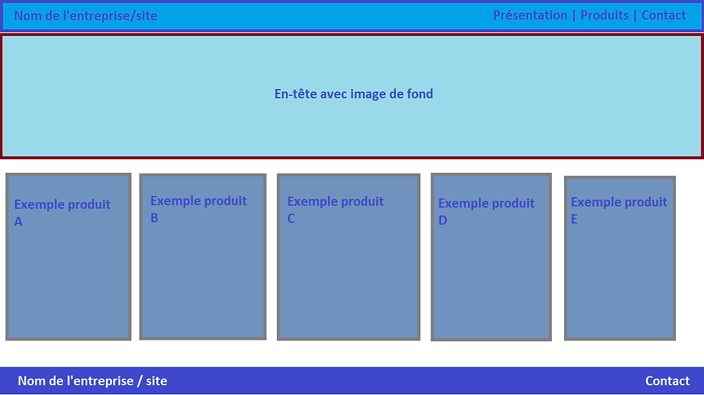
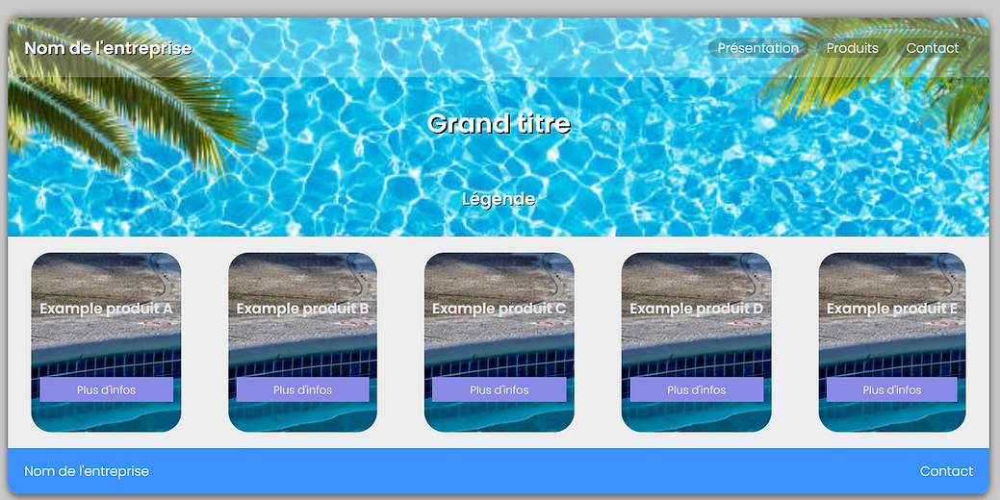
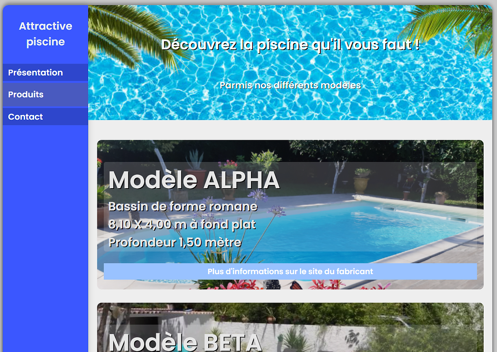

Stage de première année
Portfolio de stage
Bienvenue dans ma page portfolio par rapport à mon stage.
Vous retrouverez ici les différentes étapes de la réalisation du site Internet.
Maquettes:
Voici les maquettes réalisées afin de pouvoir visualiser le rendu que devrait avoir la mise en page du site web. J'ai proposé deux versions. Une seule sera gardée pour la mise en production.
Maquette n°1
Cette maquette représente un layout classique avec une navbar, un header et des cards pour les différents produits.

Maquette n°2
L'accueil offre la possibilité de voir plus en détails les produits avec une barre de navigation à gauche.
Développements:
Voici les développements réalisés afin de pouvoir avoir le rendu officiel du site web, accordé aux maquettes. J'ai proposé deux versions. Une seule sera gardée pour la mise en production.
Développement n°1

Développement n°2
Rendu final du site internet:
Voici le site Internet final pour la mise en production.
Parmi les premiers retours, ce qu’il en ressort est que le site est très simple d’utilisation, convient très bien pour se faire une idée des modèles, pour pouvoir motiver un potentiel client à contacter l’entreprise pour plus de renseignements, et enclencher une demande de devis gratuite et un potentiel rendez-vous client.
Le site final aura pour design la version deux, révisée pour avoir plus d'informations à portée de main.

Bilan de mon stage de première année
Introduction
Je me nomme PARMENTELOT Maxime et je suis actuellement en 1ere année de BTS SIO au sein du lycée de Merleau Ponty à Rochefort, j’ai été pris en stage dans l’entreprise Attractive Piscine pour une durée de six semaines.
Remerciements
Je tiens à dire merci à la direction d’Attractive Piscine, pour m’avoir accordé du temps malgré leur emploi du temps chargé.
Mes objectifs lors de ce stage
Approfondir mes connaissances dans le développement de site web, me mettre en situation vis à vis des potentiels utilisateurs, gérer la mise en production du site web grâce aux solutions d’hébergement, répondre rapidement aux demandes d’améliorations pour faire évoluer les versions de sites web, mettre en valeur l’entreprise dans laquelle j’ai été pris pour développer une présence en ligne de cette dernière, recueillir des avis clients.
L'entreprise
En 2010, Lionel PARMENTELOT créa Attractive Piscine, une auto-entreprise qui sera un revendeur agréée du fabricant de piscine niçois Okéanos Piscines. Cette entreprise base son activité essentiellement sur la vente et pose de piscines, mais également de dépannage, maintenance des systèmes liés aux piscines (local technique, pompes à chaleur, ...).
Le siège social de Attractive Piscine est situé au Hameau de Brainaud dans le village de Taillebourg.
La concurrence dans ce domaine est présente, surtout depuis l'épidémie de Covid 19, à cause de l'augmentation des matières premières, du transport. Voyant que cette entreprise n'avait pas de présence en ligne, je me suis proposé à développer cette dernière gratuitement, dans le cadre de mon stage de première année de BTS SIO.
Missions prédictionelles
Mon tuteur (Lionel PARMENTELOT) et moi, avons convenu à la fin du stage avoir un site Internet fonctionnel, convenant a de potentiels nouveaux clients. Ces derniers, on a déterminer qu'ils n'étaient pas tous apte à utiliser Internet de manière aisée. Il a donc été convenu de concevoir un site Internet léger, simple d'utilisation, explicite, pour favoriser une prise de contact avec l'entreprise et enclencher une demande de devis, puis un rendez-vous client.
Les Missions que j'ai dû réaliser
Lors de ce stage, je ne fabriquait pas un site pour moi-même/une de mes activités. C'est ce qui a fait la différence lors de ce stage, devoir adopter une certaine souplesse pour concevoir le site internet qui sera du plus simple possible, pour convenir à un maximum de potentiels clients.
Semaines
Première semaine - 16/05
Durant cette première semaine, j'ai eu pour mission de récolter les besoins spécifiques de l'entreprise, avec mon tuteur. Il m'a exprimé les souhaits qu'il avait vis à vis du site Internet. J'ai dû réfléchir et imaginer quel type de site aurai été suffisant, et j'en ai conclu qu'un site de type "vitrine" serait amplement suffisant pour ce type de besoin.
Par la suite, j'ai réalisé un début de première maquette afin d'imaginer la mise en forme des éléments du site internet.
Deuxième semaine - 23/05
J'ai eu pour mission de déterminer les technologies à utiliser, à savoir de l'HTML5 et du CSS3 et quelques images pour ce type de site. J'ai pu créer deux maquettes avec deux mises en forme différente. La semaine prochaine, le développement commencera.
Troisième semaine - 30/05
Durant cette semaine, j'ai eu pour mission de réaliser la première maquette en code. Le développement en est pour l'instant à la structure html avec un peu de styles css, qu'il me reste à terminer. Le développement de la seconde maquette devra se faire sur la semaine du 06/06, après finalisation de la première maquette.
Quatrième semaine - 06/06
Lors de cette semaine j'ai eu pour mission de terminer la première maquette. Voici où en est le développement. On y voit que le site web première version reprends les éléments de la première maquette.
J'ai pour l'instant créée une simple page d'accueil, la plus importante pour tout nouveau potentiel client. Le site web est très léger et ne contient que du html et du css, avec des images compressées. Le développement des autres pages seront dans la même charte.
Lors de la semaine du 13/06, j'aurai pour mission de terminer la seconde maquette en version web.
Cinquième semaine - 13/06
Lors de cette semaine j'ai eu pour mission de terminer la deuxième maquette. Contrairement à la première maquette, les écritures sont plus grosses, les modèles (produits) ont des photos plus visibles, il est d’une certaine manière plus accessible que la première version. Cependant, il est toujours composé uniquement de html et de css, pour avoir un site compatible et léger avec le maximum de machines. Le reste des pages reprendra le même style graphique.
Lors de la semaine du 20/06, j'aurai pour mission de terminer le site qui sera choisis (première ou deuxième version). Pour cela, j’attendrai l’avis de quelques clients de l’entreprise. Le site ne sera pas hébergé en ligne, à la demande de mon tuteur (étant donné que la fin de saison approche, ce dernier préfère lancer le site web pour la nouvelle saison). J’aurai également pour mission d’enregistrer tous les produits, noms et raisons sociales de l’entreprise, les pages avec les informations de l’entreprise.
Sixième semaine - 19/06
Pour cette dernière semaine de stage, j’ai eu pour mission de déterminer le design final et la version qui allait être utilisée. La seconde version aura été sélectionnée pour son design plus expressif sur les modèles de piscine, notamment sur sa page d’accueil. Elle offre un plus grand visuel.
La seconde mission aura été d’alimenter le site web avec les produits que mon entreprise vends, avec ses caractéristiques principales, une photo de fond ainsi qu’un lien vers le site Internet du fabricant. J’ai eu également pour mission de terminer la page de présentation de l’entreprise et la page de contact.
En milieu de semaine nous avons pu, avec mon tuteur, demander des avis sur le site Internet final afin de pouvoir améliorer certaines choses, comme la hauteur des produits dans la page d’accueil, pour que les photos soient plus visibles.
Bilan
Au cours de ces six semaines de stage, j'ai pu réaliser que la partie l'une des parties les plus complexe pour la conception d'un site web n'était pas sa phase de développement, mais aussi sa phase de réflexion. J'ai du, à multiples reprises modifier le site internet, sa mise en forme, sous conseils de clients actuels. Il est aussi très important de faire valider son travail avant de le continuer, de récolter des avis de personnes totalement différentes, qui ne s'y connaissent également pas.
Malheureusement, je n'ai pas pu mettre en ligne le site web sur mon serveur, étant donné que l'entreprise Attractive Piscine termine sa saison. Le site devrait être mis en ligne pour la saison prochaine.